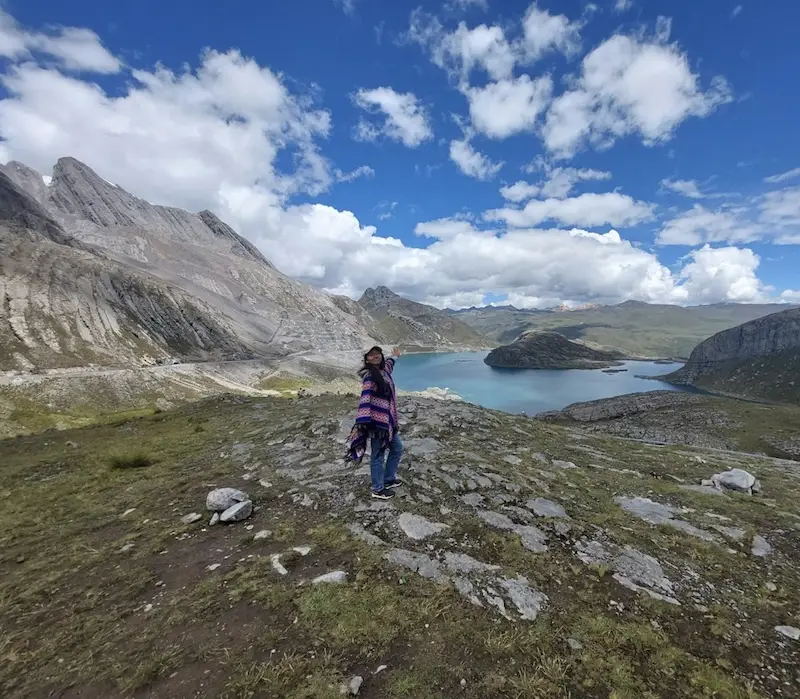

Janisse Alondra Rodriguez Cumba | WDD 130
Hello, everyone! I'm glad to present myself. My name is Janisse, and I am from Lima, in Peru. I love all technological areas since I was a child; in addition, even more all the cutting-edge stuff that are being sold currently over the world. I have been trying to be involved in multiple areas of this. Sometimes it was difficult at the beginning because of the adversities; nevertheless, I kept going until I could achieve them. I know that beside our Heavenly Father's support we can do anything. Furthermore, I am sure that this course will help us to enhance our pieces of knowledge. Best wishes for success in this course and our goals!